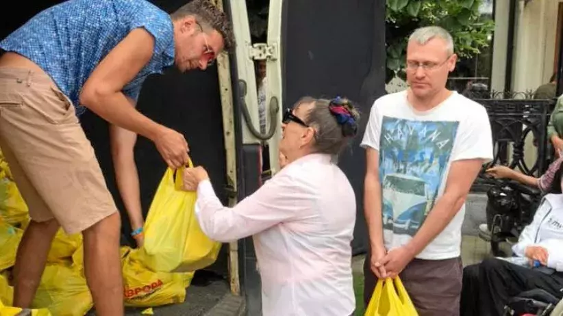
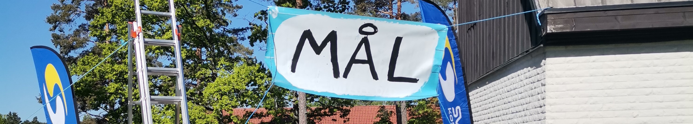
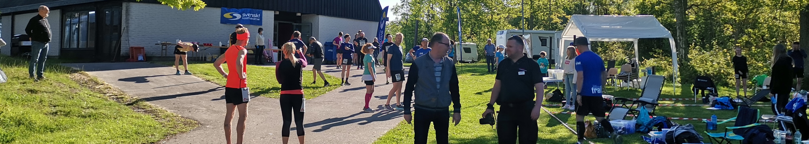

HJÄLMARGÅRDEN
BACKYARD ULTRA
2023
Information till sponsorer
Hur samlar vi in pengar?
Alla som deltar har möjlighet att själva samla in pengar genom att springa så många varv som möjligt. Dessutom kommer vi ha företagssponsorer som hjälper till med insamlingen. Pengarna kommer att förmedlas via Evangeliska Frikyrkans systerorganisation den Ukrainska Baptistunionen som bedriver hjälparbete bland drabbade i Ukraina. Pengarna samlas in till Plus-girokontot: 900403-7 Svensk insamlings-kontroll
Kan ert företag hjälpa till i insamlingen?
Ett företagsbidrag är både en god gärning och ett utmärkt tillfälle för ett företag att exponeras för alla som deltar och tittar. Evenemanget kommer även att live-sändas. Hela det sponsrade beloppet går sedan oavkortat till insamlingen. Som tack för er insats får ni ett Diplom som ni kan sätta upp i entrén, fikarummet eller på hemsidan vad ni tycker passar bäst. Ett företag kan gå in antingen som varvbonussponsor eller som en allavarvsponsor.

VARVBONUSSPONSOR
En varvbonussponsor skänker pengar för alla som går i mål ett visst varv. Om 10 löpare går i mål varv 10 och sponsorn lovar 500 för varje löpare som går i mål blir det alltså 5000 kr.

ALLAVARVSPONSOR
En sponsor kan också gå in som en ALLAVARVSPONSOR och sponsra alla löpare i hela loppet med ett visst antal kr per löpare. Då väljer ni själva ett belopp som ni vill betala för varje varv som alla löpare avslutar. Totalt beräknas det springas ca 250 varv (ni kan såklart alltid sätta ett maxtak på sponsringen).
Sponsorpaket
För sponsorer som skänker över 1000 kr vill vi ge extra exponering. Därför har vi skapat tre sponsorpaket; brons silver och guld. Klicka på länken nedan för att se en översikt av de tre paketen.
Översikt av sponsorpaketen

Hur blir man sponsor?
Allt ni behöver göra för att bli en sponsor är att ta kontakt med oss via mail och berätta att ni är intresserade av att stödja insamlingen. Sedan skapar vi tillsammans ett upplägg som passar bäst för just er och efter det skickas en faktura som betalas in till 90 0403-7.
För mer info maila:
hjalmargardenbackyard@gmail.com
Stort lycka till i den fortsatta verksamheten!